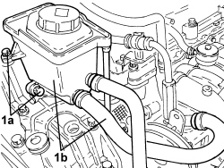
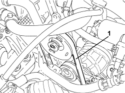
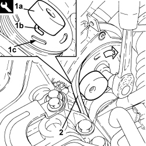
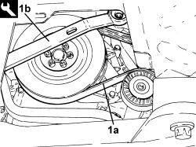

1092C26 BELT FROM AIR CONDITIONER COMPRESSOR DRIVING POWER STEERING PUMP - R + R
- Path
- Procedures > 10 ENGINE > 1092 ENGINE COMPONENT MISCELLANEOUS DRIVES > 1092C POWER STEERING/SELF-LEVELLING SUSPENSION PUMP DRIVE > 1092C26 BELT FROM AIR CONDITIONER COMPRESSOR DRIVING POWER STEERING PUMP - R + R
- Kind
- repair procedure (removal / refitting; the operation number is the code)
- Applies to
- engines: 1.9 JTS, 2.2 JTS, 2.4 JTD 20V; all production periods
- Interactive page
- https://sloeber94.github.io/elrnDB/#/939010702
Applies to: engines: 1.9 JTS, 2.2 JTS; all production periods
 Removing
Removing
 Refitting
Refitting
Applies to: engines: 1.9 JTS, 2.2 JTS; all production periods
1. Release and remove the belt from the air conditioning compressor to the power assisted steering pump.

Applies to: engines: 1.9 JTS, 2.2 JTS; all production periods
Refitting
Removing1. Fit the tool (1a) attaching the pin (1b) in the power steering pump pulley slotted opening (1c).
Tool | Description | Function | Validity |
|---|---|---|---|
2000017700 | Tool | Fitting power steering pump belt | 1.9 JTS 2.2 JTS |
2. Partly fit the belt as illustrated.
3. Using a suitable spanner, rotate the power steering pump pulley in a clockwise direction until the belt (2) is fully fitted.

Applies to: engines: 1.9 JTS, 2.2 JTS; all production periods
- Remove the tool used for fitting the belt.
- Place the power assisted steering fluid reservoir in its housing and secure it using the bolts.
Applies to: engines: 2.4 JTD 20V; all production periods
Removing
RefittingOp. 4450B04 RIGHT FRONT WHEEL - R.R
Op. 7055B91 RIGHT FRONT WHEEL ARCH LINER - R.R.
1. Loosen the tension of the belt (1a) using the tool (1b) and lock the moving tensioner using a suitable (5 mm diameter) pin.
Tool | Description | Function | Validity |
|---|---|---|---|
1860966000 | Spanner | Loosen the single engine components drive belt tension | 2.4 JTD 20V |
- Prise up and remove the belt.

Applies to: engines: 2.4 JTD 20V; all production periods
Refitting
Removing- Fit the belt and adjust the moving tensioner using the tool to release the pin.
Tool | Description | Function | Validity |
|---|---|---|---|
1860966000 | Spanner | Loosen the single engine components drive belt tension | 2.4 JTD 20V |
Topics linked from this page (2)
Topics that link to this page (10)
- 1020A20 CRANKCASE OIL SUMP - R.R CLEAN SURFACES FOR SEALANT APPLICATION
- 1064A22 VARIABLE GEOMETRY TURBOCHARGER R R
- 1084A40 ENGINE OIL LEVEL SENSOR - R + R
- 1088D24 WATER PUMP RIGID COOLANT INLET PIPE - R.R.
- 1092A10 CRANKSHAFT PULLEY - R + R
- 1092B80 AUXILIARY BELT FIXED TENSIONER (ONE) - R+R
- 1092G10 SINGLE ENGINE BELT - R.R
- 5040A20 AIR CONDITIONING COMPRESSOR - R+R - INCLUDES FLUID LEVEL CHECK AND TOP UP IF NECESSARY
- 5040A26 AIR CONDITIONING COMPRESSOR SUPPORT - R.R.
- 5530A10 ALTERNATOR - R+R